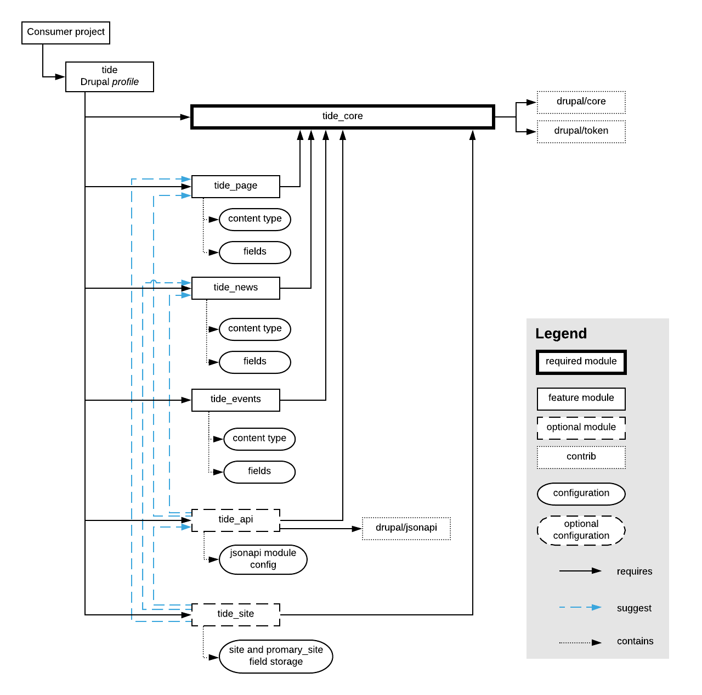

Modules¶
The standalone modules are split based on the features or functionality they provide. Modules can be installed as a part of the profile as well as a standalone (provided that other dependency modules installed as well).
- Every module implements a well-defined feature set.
- Modules are versioned.
This allows for more granular approach when picking modules for particular site needs. - Every module has a minimal dependency on other modules.
- Every module has a set of relevant automated tests.
List of modules¶
| Name | Machine name | Category | Repository | Description |
|---|---|---|---|---|
| Tide API | tide_api | Utility | https://github.com/dpc-sdp/tide_api | Exposes content entities to API endpoints. it is required for sites running headless. |
| Tide Core | tide_core | Utility | https://github.com/dpc-sdp/tide_core | Configurations and settings for Tide distribution. Dependency module for any other Tide module. |
| Tide Event | tide_event | Content type | https://github.com/dpc-sdp/tide_event | Event content type and fields. |
| Tide Landing Page | tide_landing_page | Content type | https://github.com/dpc-sdp/tide_landing_page | "Landing page content type with fields. Based on paragrpahs, it allows to create pages with complex layouts." |
| Tide Media | tide_media | Utility | https://github.com/dpc-sdp/tide_media | Media types and configurations. |
| Tide Monsido | tide_monsido | 3rd party integration | https://github.com/dpc-sdp/tide_monsido | Integration with Monsido platform. |
| Tide News | tide_news | Content type | https://github.com/dpc-sdp/tide_news | Event content type and fields. |
| Tide Page | tide_page | Content type | https://github.com/dpc-sdp/tide_page | Page content type and fields. |
| Tide Search | tide_search | Utility | https://github.com/dpc-sdp/tide_search | Search configurations and settings. |
| Tide Site | tide_site | Utility | https://github.com/dpc-sdp/tide_site | Multi-site and multi-section content sharing. |
| Tide Test | tide_test | Utility | https://github.com/dpc-sdp/tide_test | Test content type and helpers used to test other modules. |
| Tide Webform | tide_webform | Utility | https://github.com/dpc-sdp/tide_webform | Forms supports such as Content Rating form. |
Tide Profile vs Tide Core module¶
In order to allow using of Tide modules outside of profile, it was decided to
use Drupal profile tide only as a collection of tide_* modules (required in
profile's composer.json and profiles info yml file as dependency), while all
of the common site configuration is captured in the tide_core module, making
it a main dependency for all other modules.
Diagram of Tide module dependency

Versions¶
Modules versions follow semantic versioning:
Quote
Given a version number MAJOR.MINOR.PATCH, increment the:
MAJOR version when you make incompatible API changes,
MINOR version when you add functionality in a backwards-compatible
manner, and
PATCH version when you make backwards-compatible bug fixes.
Additional labels for pre-release and build metadata are available as
extensions to the MAJOR.MINOR.PATCH format.
With some Tide functionality heavily relying on specific Drupal core
version, when features added and changed in MINOR Drupal core
versions (like moving Media into Drupal core), Tide modules increment
their MAJOR version when Drupal core or dependent contributed modules change
their API.
Since Tide modules functionality is built on top of Drupal core and contributed modules, it has to "tighten" versioning rules.
Every Tide module has to increment the:
MAJORversion when Drupal core or contrib module has an API change. An example of this is moving Media into Drupal core in version8.5.MINORversion when Tide module functionality is enhanced or when other dependent Tide module has it's API change (that would trigger own release).PATCHversion when there is a backwards-compatible bug fixes (no change from SemVer).
It is important to understand that a module's MAJOR version must be
incremented if it's API has changed, since other modules now have to update
their integrations with current module to use a new version.
Example of version increments¶
Consider this module dependency tree:
|-consumer site
|-tide@1.1.1
|- tide_page@2.2.2
| |- tide_core@3.3.3
| |- drupal@8.5.6
|- tide_api@4.4.4
|- jsonapi@1.2.0
Consumer site requires Tide profile, which is normal practice to solely rely on upstream maintenance and receive updates.
Tide profile requires Tide page, which relies on Tide Core, and Tide API. Note that Tide Page has some optional API configuration that is used only when Tide API is enabled.
Note
Since tide_core is a module with most profile configuration, it
also has Drupal versions constraint.
When Tide Page adds a new field, it changes it's "contract" with other modules,
making it's MAJOR version to increment, resulting in version 4.0.0. However,
the tide profile that was referencing the tide_page module at 2.2.2 has
not changed it's own "contract", making the release a MINOR change, resulting
in version 1.2.0.
Another case - dependency is updated. When tide_api updates integration with
jsonapi from 1.2.0 to 2.0.0, the MAJOR version of tide_api must be
incremented as well, since jsonapi@2.0.0 brings configuration changes
incompatible with version 1.*. Now, tide_page has optional configuration for
jsonapi module, which now has to be updated, so tide_page MINOR version is
updated from 2.2.2 to 2.3.0. This is because tide_page does not change
it's own "contract" with other modules - the fields are the same, the output of
API requests is the same, other functionality provided by tide_api is the same
as before, but just internal implementation was changed.
Last example - updating Drupal core to 8.6.12, which releases API changes within it's
MINOR versions. This is a special case for versioning of the Tide module -
tide_core has to increment it's MAJOR version.
The resulting dependency tree would look like this:
|-consumer site
|-tide@1.2.0 <-- MINOR version updated
|- tide_page@2.3.0 <-- MINOR version updated
| |- tide_core@4.0.0 <-- MAJOR version updated
| |- drupal@8.6.12 <-- MINOR version updated
|- tide_api@5.0.0 <-- MAJOR version updated
|- jsonapi@2.0.0 <-- MAJOR version updated
Automated testing¶
Tide modules use PHPUnit and Behat for unit and integration/behavioural testing. The tests are running inside of the Continuous Integration pipeline provided by CircleCI.
For every change pushed to the repository, CircleCI starts the build, where
tests are running in 2 modes: normal and suggested.
In normal mode the module is installed with it's required dependencies into
freshly built Drupal site. Once installed, the tests will run and check that
the configuration shipped with the module indeed works.
In suggested mode, the module is installed with it's requires and optional
dependencies. Once installed, the tests will run and check that the
configuration shipped with the module indeed works and that it does not
conflict with other optional modules.
This "double-testing" is very powerful tool to keep configuration in releasable state. Without it, there is a high chance of committing conflicting configurations into multiple modules, releasing modules without knowing about this problem, and becoming to a "stale mate" situation, where Content Repository implementation site needs to be updated, but there are no modules that can be installed without breaking configuration.
Maintenance¶
SDP development team is committed to support development, maintain all Tide modules and follow versioning rules.
Developing modules¶
See Module development chapter.